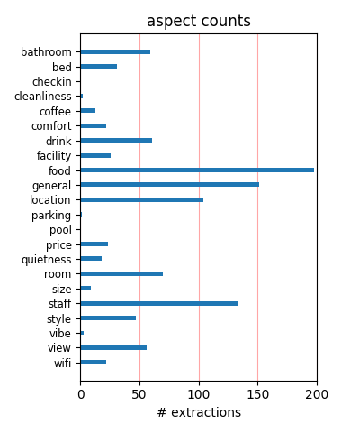
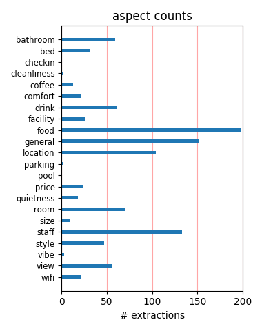

Amazing location. Minutes from Catalunya where the Aerobus drops you off. The bus costs 5 eu. A sweet trip to a from the airport. Amazing restaurants close by like Bar Lobo. Clean hotel. Quiet hotel. Superb breakfast. 24 hr yummy snacks. And the best was the cheerful And helpful staff.
I'm really, really late in writing this review! My husband and I stayed here almost 4 years ago for our 10th anniversary and we loved it. I want to go back to Barcelona just to stay there. I can't say enough good things about it! Glad it is still receiving the rave reviews it deserves!!
Spent 2 nights after a cruise. It was close to everything and very handy to the hop on hop off tourist buses and the regular transit system buses. I thought it was a bit pricey for not including breakfast. It was clean, comfortable, the staff very helpful Very close to many tapas restaurants.
We stayed at the Casa Camper for 4 nights in early June. Wonderful concept with the additional room across the hall and the 24 snack/drink bar and free breakfast. Absolutely fantastic staff, their restaurant suggestions were great. The area seemed perfectly safe, close to the Rambla yet quiet.
Just returned for 4 night at Casa Camper, and loved it. It is in a great location, and the room much larger then I thourgt from the pictures, and very quiret. The staff were great and helped with all you quistions, from trips to restaurants, very helpful. It is hip, without being over the top.
24-hour food bar was an excellent idea well implemented. Bedroom/lounge separation works well espceially if travelling with friends and occasional privacy is required. Well located 2 minutes from the transport hub of Plaza de Catalunya. Friendly and helpful staff. Pleasant design sense to the decor.
I stayed one night in Casa Camper in December and loved it. I had seen the rooms on a previous occasion, and did not really fancy the separate bedroom/living room thing, so instead I booked a suite for apprx EUR 20,- extra. It worked perfect. The breakfast is great and the service is excellent! I will be back.
My family and I enjoyed our stay at Casa Camper. It lived up to all expectations. We had a suite, which was superb in every way. The building itself is a designers dream and a lot of thought and attention to detail has gone into everything. The staff were very friendly but professional at the same time. I would not hesitate to recommend this hotel to anyone.
Number 1 is the rating this Hotel has here on Tripadvisor and rightly so. This was my 4th. time staying here and I love it more each time I stay. You do it right Casa Camper, keep doing it as you do it now and you should be in top position for a long time to come. Great/splendid/amazing/etc. Question:- Why is the example of Casa Camper not followed more closely???
Great location and really helpful staff.Gave us great restaurants and metro info.Loved the 24 hour snacks and drinks and the rooftop patio makes a nice place to go after touring all day.The room with the hammock is unusual but actually quite nice.Don't waste your time looking for better.cheaper deals stay here.Stayed for 6 nights in mid May.Free internet a big bonus.
From the moment we walked into the hotel lobby, we were made to feel at home. We stayed in a king suite and the amenities were fabulous. The rain shower in bathroom is such a treat after a long day of exploring the city. The hotel is in a great location and is walking distance to all of the major points of interest in the city. This hotel is a great value for the money.
great service! BA lost our luggage and they were so helpful in calling the airline etc to get it back. they all speak great english. the free food is wonderful! The rooms very funky too. Highly recomend it. Great spot too but hard to find! loved the smell in the foyer too! a scented candle perhaps. Really cool place to stay and is a stand out for me in my 6 week europe holiday.
This is the second time I've stayed here and it continues to deliver. I was potentially the customer from hell, with large boxes being delivered, lots of queries, visitors etc etc. The staff here are amazing. They couldn't have been more helpful and did it all with a smile on their face. The rooms are amazing, clean and the food available is delicious! I wish I could have stayed longer.
Along a narrow street off the ramblas, few minutes walk from placa catalunya, is a quiet and comfortable hotel where nothing is too much trouble for the multilingual staff. The decor is elegantly understated, in the day it can be a quiet refuge from frantic city life. The rooms private with an amazing wall of greenery seen from the bathroom. After the Casa Camper, no other hotel will do!
Loved the Casa Camper hotel. Stay here if you want friendly, helpful staff, free snacks and soft drinks, delicious breakfasts cooked to order by a very cheerful chef, central but quiet location, nice bath products, very clean in every way & a cool atmosphere. Don't stay if you want old style, traditional type hotel. This is somewhere very different! Casa Camper was a highlight of our trip.
We had an excellent two night stay at the Casa Camper Hotel. The staff are helpful and friendly. There is a great breakfast in the morning and complimentary food and beverages are available throughout the day and evening. The terrace on the top floor is great for watching the sun go down and relaxing after a day of sightseeing. Overall, an excellent experience. We would definitely go back.
Casa Camper offers a super-friendly staff, excellent snacks (not just potato chips but little sandwiches, yogurt, pastries, coffee, tea, etc) available FREE 24/7, a total blackout window covering, and a separate room for relaxing, sleeping or TV. Sleek, modern, inventive but functional decor throughout. The location is terrific--close to Plaza Cataluna but quiet. We loved everything about it.
Great area amongst the hustle and bustle of the locals but like an oasis to enter when you return. Brilliant rooms with a great breakfast and snacks available free all day. Service first class and friendly without being intrusive. We had a suite and a room which gave us heaps of space. The boys loved the hammocks and I Ioved the wall garden and bathroom. If you're used to staying at the Hilton don't come.
In decades of business and pleasure travel around the world, I can honestly say that the staff at the Casa Camper are among the most accommodating, gracious, and helpful I've encountered anywhere. Each and every one seemed to have a passion for their job and for extending true customer service and a warm welcome. We thoroughly enjoyed our stay at the Casa Camper while we explored Barcelona for 3 days pre-cruise.
I did like this hotel. They've got this cool thing where there's a cafe-type place in the lobby and there's sandwiches and stuff and it's open 24/7 and you can take whatever you like and it's all included. The staff was nice, just one guy was annoying. Stephan I think... And you get two rooms, so that's pretty cool. But its cold. Yeah, thats it. Good value, good location. Enjoy! Oh, but theres not REAL restaurant. Just the cafe. It does do breakfast though.
A truly perfect hotel for Barcelona. The free mini bar (including free bottled water) was worth the slightly premium rate alone. A very clean, modern and thoughtful hotel. All staff spoke good English which was helpful for us. The restaurant that is attached is equally as great as the hotel. Only downside is the location is bordering on a sketchy part of the city. We had no issues but if you walk a couple blocks away from the Ramblas at night time it wasn't as pleasant.
I stayed here for 5 nights in March while attending a conference. I loved everything about this hotel. The design is great, the staff are terrific, the dual room system is fantastic, especially if you are travelling with someone else. The best thing is the free food all day. The breakfasts are excellent and good food is available at any time for snacks or light meals. Security is very good, which is important since the hotel is so close to Las Ramblas. Just terrific all round.
This is a really unusual, stylish hotel in a very central location. Staff extremely helpful and friendly. The 24 hour snacks are great - I was pleasantly surprised by how good the food was, and took full advantage of it! Rooms are well-equipped - minimalist in style, but comfortable with ample storage. . Good shower and nice toiletries. Free wi-fi is a nice touch too. No, it's not a "traditional" hotel - if that's what you want, go somewhere else. But it is a lovely relaxed place to stay.
Just to add my accolades to the pile: we loved the staff, the location, and the amenities at Casa Camper. All the basics were taken care of (firm bed, strong waterfall-style shower, great linens, delicious breakfast), with truly personal, warm, and informal service. We had a little trouble with the Wifi in our floor 1 suite, but I liked sitting in the lobby to check email anyway, watching the foot traffic on lively (but not noisy) Elisabets outside. I slept better at Casa Camper than in my own home -- go!
We stayed at Casa Camper in early 2006 for our 40th wedding anniversary. We came back with 2 sets of friends on June 6, 2007. We loved the decor, the location, and the separate sitting room. The staff is wonderfully helpful. They will make recommendations for restaurants, call cabs, give directions, etc. All their restaurant suggestions were wonderful. We love the mini cafeteria with food and beverages available all the time. Our friends were thrilled with this hotel, and they think we have wonderful taste!
We stayed here when my company flew us all over for it's 10th birthday celebrations. The hotel itself was fantastic, very cool and minimal. The rooms were well appointed, if a little small. I loved the room across the hall with the hammock and the balcony overlooking the quaint little road. The places reeks of atmosphere. The roof terrace overlooking Barcelona was wonderful. As people have mentioned, breakfast portions weren't the biggest but the food itself was very nice. I can't recommend this hotel enough!
Although I haven’t stayed at casa camper (cause they were booked), I walked by the hotel before my visit to the Contemporary art museum (macba). First thing I noticed was that the hotel’s main door was closed. But then a Brazilian receptionist opened a window beside and gave us all the information about this cool hotel. she was really nice and spoke English fluently. Now I am sure these amazing reviews about the hotel and friendly staff are true and I am willing to go back to Barcelona and to stay at casa Camper.
My daugther and I stayed at the Casa Camper in Bacelona for one night before a Mediterranean cruise. It was definitely one of the best decisions I ever made. The absolute friendliness and helpfulness of the staff made up for any shortcoming I may have found after being awake for almost 24 hours in a new country. The location was uniquely perfect and the accomodations, although not my typical choice, were very comforting. As a result, Barcelona was a highlight of our trip and we would love to go back for a longer visit.
This hotel was great! Very modern stylish design. Terrific location near La Rambla. The rooms has a seperate lounge area with a hammock, lounge and TV. The bathroom looks over a unique hanging garden. The 24 hour snack bar was well stocked with healthy and delicious food and drinks. Such a nice touch to be able to come downstairs and grab a snack or drink. My only very small complaint would be that the rooms are a little dark and could benefit from a bit more strategically placed lighting. But overall one of the best hotels I have stayed in.
my wife and i have stayed in some wonderful hotels the world over,but never have we stayed in a hotel with staff as good as those at Casa Camper. thank you so much for being so helpful and pleasent and especially for the little surprises left in our room on hearing of the surprise we got from our son when he told us on the roof terrace that we were to become grandparents it was truly very touching thank you so much to all concerned oh and the hotel itself is fantastic by the way great location and enjoyed the 24 drinks and snacks,see you soon i hope
Second stay in this wonderful hotel, located in a quiet neighborhood, just a couple of blocks from the Rambla and the central (where everything starts or finishes) Place de la Cantaloyna. Breakfasts are delicious, the rooms very comfortable and user friendly (though I wish the extra room had a coffee table or extra end table since we ate and drank in their some), the WIFI worked perfectly, and the 24/7 canteen is almost priceless. Take the recommendation to go to Pla for dinner, and the local place Elisabets was great for local food at a reasonable price.
What a wonderful place to stay. Small, quiet, chic, personal, spotless, fun, and innovative. Elegant simplicity. The café is exactly right, the separate room across the hall is smarter than might at first appear, the staff is helpful and friendly, the location is excellent, and on and on and on. Here's a small tip: Next to the hotel is a small pan-Asian bar/restaurant that appears to be part of the same enterprise. I know that Asian food in Barcelona might sound weird, but it's a must. Their Asian "tapas" are incredible. You may need a reservation for dinner.
Our group of 10 ranged from 2-77 years old and everyone loved the hotel. The front desk service is fantastic with great people who can answer any questions about restaurants, tours, etc... The rooms were spacious and very clean. The minimalist approach is still comfortable and practical. We all had suites and enjoyed the extra space. Every night after dinner, we all headed to the sixth floor to hang out on the rooftop deck and enjoy the city lights. The 24 hour food and drinks come in handy, something to consider when looking at the hotel's rate. Overall, fantastic stay!
If want a quiet hotel with excellent amenities, wonderful staff, food and drink on tap, and just minutes from the centre of everything in Barcelona, this is it! Stayed for 4 nights in June with teenage son. The 24 hour complimentary snack service in the lobby is great plus you get a cooked breakfast included in your room charge. We were travelling on in Spain after our stay here and the staff went out their way to help us with the arrangements from this. Spotlessly clean, roomy, comfortable accommodation. Wonderful staff. Great location. Everything you could possibly ask for and more!
I stayed with my extended family, including a 6 year old, for three nights the last on July 1st. We had chosen the Casa Camper based on the feedback on tripadvisor and we will surely use trip advisor more often. Casa Camper is an extremely comfortable hotel with friendly and impeccable service. The ambience (especially the rooms, the snack bar and the extremely helpful (but not intrusive at all) staff make it feel just like home. The location is also nearly ideal - close enough to the bustle of La Ramblas, Placa Catalunya and the metro, yet just tucked away in a quaint and quiet block.
This hotel is well located and suberbly designed. It is close to museums, las ramblas and other quaint shops. It's security is tight (the staff only opens the door to would-be guests and other guests have their own key to enter). Unlike other chic hotels, this one has a relaxed and more down-to-earth vibe. The staff is friendly, attentive and helpful. A small corner of the hotel is specifically open all day long to hungry guests with free pastries, sandwiches and drinks. The rooms are lovely, spacious and all have a separate chill-out area with a hammock. Go there and you will not regret it.
We stayed at Casa Camper in mid-May. The room configuration with a seperate mini lounge worked out wonderfully for me as I traveled with my 19 year old son. We both had our privacy. The rooms were clean with many amenities. The staff was wonderfully friendly and very helpful with answers to all our questions. The cooked to order breakfast was beyond anything we've had in a European hotel. One day pancakes with Nutella!!!!! Food available all day was definitely a benefit. Location was excellend and convenient to Placa de Catalunya and all forms of transit. We loved Barcelona and the Casa Camper!!!!
What a great surprise -- to find a completely original hotel that is not overburdened by trendiness. There are so many unusual features -- the 24-hour kitchen where, in place of a mini-bar in the room, there are always sandwiches and soup and yogurt and other good things. The staff truly is exceptional -- there's a personal warmth one doesn't feel elsewhere. The location couldn't be better, at least for us. A narrow charming street that leads into the plaza where Richard Meier's contemporary art museum stands; an excellent bakery and cafe on the corner; interesting streets on all sides . . . we will be back.
Probably the best city centre hotel we have stayed at in Europe. Great location in the heart of El Raval, close to the main city centre but an oasis of calm. Tremendous staff, so friendly and helpful, nothing was too much trouble. Loved the 24/7 snacks, drinks (selection of cold beverages, tea, Nespresso) and a great breakfast to start each day. Loved the layout and furnishing of the bedroom and the view of the vertical garden in the courtyard. The sitting area was cosy with a hammock and a small balcony overlooking the street. Well equiped gym in the basement and a roof terrace make it 5 star. Highly recommended.
The hotel is definitely is not one of those hotels you see every day, it's very unique and modern. You get to have in addition to your room a mini lounge just across the hall. The buffet is open 24 hours a day and it's complementary. You can take your meal at the lobby, in your own lounge or at the terrace on 6th floor. Wifi is free all the time and everywhere in this hotel. The staff are extremely friendly and cooperative. Some may think of the location as a down side -since it's on a side street of the rambla's - but to me I stayed at la rambla's in the royal hotel it was too noisy so the location is perfect for my taste.
WE stayed for 3 nights at Casa Camper, Barcelona and mostly enjoyed it. THe best part was the position, once you and the taxi driver find it is very central to a great part of town. The down side for us was the liviing room/bedroom across the hall which had our 7 year old daughters bed, we did not feel comfortable leaving her across the hall. If you visit with small children make sure you book a room without the lounge across the hall. Apart from that the hotel is beautifully and simply decorated, a little dark in the rooms. The staff are helpful and the free food and drinks in the lobby a nice change from overpriced mini bars.
Just spent a no-kids weekend getaway at the Casa Camper. We liked everything about it, the twin room concept was not bad at all and the interiors very nice. The location is great, not too noisy, and everything within walking distance. Breakfast was good and the free snacks a great idea. What really makes this place stand out is the staff, always helpful and friendly, and in a natural manner. One staffer got us tickets for a great football game on short notice, much appreciated. A stylish and relaxed hotel. (Also check out the Central bookstore in the same street if you are serious about books, and do go to a football game if Barca is playing).
Location perfect: easy walk to the best known Rambla, but far enough away to be in another world of small shops and restaurants. Comfortable, clean--love that shower-- and an across the hall private lounge was used and enjoyed. An outlet in the safe allowed us to charge the laptop but keep it locked up while we were away Breakfast was great and all-day and evening snacks just what we needed. The staff was helpful without being overbearing, youthful, very nice to older guests (us) and knowledgeable and enthusiastic about the city. What more could we ask for? (ok, one thing-- a little boost in the WiFi in the rooms). Seven days later we didn't want to leave.
After beining horrible disapointed in our booked B & B, Suzanna and her team made it all well in one seconde. When they heard we were on our honeymoon, they went upstairs en decorated the rooms with roses en champagne. They treat us so personally that it looked as if we stayed with friends. Ever morning they spoiled us with Coffee, Breakfast and Dutch newspapers. It is a small hotel, so they can and will give you all attention. They gave us names of restaurants, where only the Spanisch people eat and we have rarely eat that good before. Besides your large sleeping room, you also have an private lounge room. The roof terras will give you a beautiful view over Barcalona.
From the tripadvisor reviews we chose this hotel for part of our honeymoon and it did not disappoint. The hotel was just off La Ramblas and in a little side street so it was very quitet. The free food was great and there was plenty of it. Special mention has to go to the staff, from the personal introduction to the hotel, to assistance with choosing restaurants, to taxis, to letting us leave our bags at the hotel a couple of days checking out. I would recommend paying for a suite if your budget allows, as the room is all connected, rather than split by a corridor. Finally, we loved the Camper slippers and searching for some on the internet to buy as a pratical memory of our stay.
We absolutely loved this hotel. The rooms were great and the shower was the best I've had in any hotel anywhere. Location is a block and a half from the Ramblas with great restaurants and shopping very close. The hotel staff was very helpful. I've been in a few "hip" hotels where the young staff members viewed us 60+ year olds as interlopers on their turf and gave us short shrift. Not here--the staff was fabulous and mostly refused to accept tips. And the free food and non-alcoholic beverages 20 hours a day was wonderful. Just so nice to have that cold water, juice or soda there for the taking or a sandwich, salad, or cookie to tide us over till the late Barcelona dinners. What a treat.
To celebrate our retirements this year, my friend and I spent 3 weeks in Spain, France and Italy. Casa Camper was by far the most "customer-centred" experience of all - from the moment our cab pulled up in front and a staff member was there immediately to help us with our bags - to the moment we left. We agree with all the compliments paid by other visitors - love the 2 rooms for giving us space to spread out - great beds, love the bathroom with the view of the plants - great toiletries; appreciate the convenience of the 24 hour snacking facility and the made-to-order breakfast in the morning. Friendly, knowledgable staff provided the finest service we experienced in our travels. We highly recommend Casa Camper!
We arrived at Casa Camper after a 5 hour drive from Arles. We are 2 adults and 2 teenage boys. This was the perfect hotel for us. The free (quite delicious) 24 hour snack bar, the good breakfast and the surprisingly quiet yet modern rooms were a real oasis in the midst of the busiest pedestrian part of the city (do note, that it is a bit hard to find, or to park if you are driving to the city, ask for specific directions in advance). The service staff was terrific. They helped us with directions, suggestions, restaurant and shopping recommendations, including some less touristic spots. We would especially like to call out Georgina who really went out of her way to help. We would not stay anywhere else in Barcelona.
This is my second stay at the Casa Camper. What a great experience!. This time I could not book a suite and stayed and one of the rooms, and enjoyed having a separate private lounge to chill out and rest. It felt like home. Much more relaxing that having to sit on your bed on a normal hotel room. What is not to like. The rooms are big, modern and comfortable. The bathroom shower is a pleasure. The breakfast is a delight and the 24 hour free food bar is better than room service at most hotels. If there is one problem with the Hotel is that is not easily accesible directly by car. This is really an incovenience only if you are coming to Barcelona for business but even then, my local business partners don't seem to mind.
We would definitely like to come back to visit Casa Camper. Their unique concept separates your sleeping quarters from your lounging quarters- that's right, 2 rooms! One room offers an excellent wall garden view (completely private but lots of light) and the sala has a second TV, couch and mini- balcony. We had a wonderful view from our sala but it still didn't compare to the amazing view of the rooftop terrace. My husband's favorite part was the free buffet. They don't serve full meals but rather light snacks, drinks, and coffee. The staff was friendly and engaged in a conversation about Barcelona and even other cities on our route. Wonderful location but not on a busy street- you may want to email/call the hotel for directions.
This hotel has the best customer service of any place I have ever stayed. My credit card was stolen when I was en route from the United States. The front desk staff at Casa Camper helped me contact my credit card company in the US and get a new card delivered. They even poured me a glass of wine and commiserated while I was on hold with the Spanish arm of Visa. And they provided great sightseeing suggestions. The staff is very warm and friendly, but not at all pushy. The location is great -- right in the heart of town. The rooms are quiet and immaculate. The breakfast is ample, and there were free snacks available all day (including fruits, yogurt, soup, bread, pasta salad, etc.). I cannot recommend this hotel highly enough. Stay there, you won't be disappointed.
Just back from a stay at the Casa Camper. We booked on the strength of the other reviews and they are not exagerating how great this hotel is. There is a security entrance and on entering the hotel are greeted by the friendliest of staff who instantly make you feel welcome. The rooms are ultra modern and superbly clean. The little lounge across the corrider is compact and has its own tv and settee. There is a lovely terrace on the 6th floor, which has lovely views. The hotel is less than a 5 minute walk from las ramblas, in a great position just far enough away from the noice and bussle of this very busy tourist area. It is a very modern hotel, and maybe not suitable for someone looking for a tradition spanish hotel, but for cleanliness, service and location it cannot be beaten.
Had heard from friends that this was a good place to stay to really experience Barcelona. They were correct. The location near to Las Ramblas but not too near was just perfect for us. I enjoy staying in lively parts of towns and this area was great lots of cafes, galleries and retro clothes shops. The staff were exceptionally helpful and pleasant giving us the steer on a couple of excellent places to eat and even got us excellent tickets for the Barcelona/Valencia match (the day before the match). Also their restaurant, hidden next door in the back of the tapas bar was superb. We had a 13 course Japanese/catalan meal from El Bulli's ex Chef de Cuisine, fantastic. If however you are looking for a traditional 5 star hotel, try elsewhere, there are quite a few hotels in Barcelona that fit that description.
I loved the location and snacks all day long. Snacks were so tasty and freshly prepared. This is the only hotel i have ever seen where you can find organic drinks and healthy sandwiches. At breakfast, you can have whatever you want and there are plenty selection. Once, I wanted Spanish Omlet and i received omlet full of onion. May be i could not taste potatoes inside but again it was great. Hotel is close to Ramblas however it is even closer to Raval where i didn't feel comfortable at night. What i did not like about the hotel was the bathroom that was open plan like bathroom, with no door. It made the room smelly after taking shower that was not nice. A second room was given to the us as living room, to me it was not necessary but this is a nice detail. In general, this is a great hotel. I would recommend to singles or families without children.
We stayed at Casa Camper for three nights in June. The hotel decor is very minimal and unique which I happen to like very much. The young staff were all very friendly and helpful and you truly felt like they wanted to help you and make sure you enjoyed your stay. The room was a good size for a European hotel. The shower was amazing but it does not have a door so might be awkward if traveling with someone who is not a partner/spouse. Lovely bath amenities (we even purchased the shower gel we liked it so much). The room was very quiet, we heard no outside noise. Comfy beds and nice linens. The free breakfast was great, there was a nice selection of cereal, yogurt, fresh fruit, breads and pastries plus you could get hot dishes cooked to order such as eggs any way, pancakes, and bacon. The location is very good with lots of little shops, bars, cafes close by and walking distance to the rest of the "old city".
Just came back from a 3-night stay at Casa Camper. This is the best city hotel I have stayed in. They've got it just right - 5-star customer service but not in an obtrusive way. All the facilities you could want to make you feel at home. Not stuffy, relaxed, friendly. You are invited to make yourself feel at home. Everything works, the place is super clean and the friendly crew is always to hand to help with any requests. Great breakfast buffet and the drinks and snacks which are available throughout the day are a real bonus as sometimes you just want to sit quietly with a cup of coffee. I will definitely go back there on my next trip. We sayed in a suite and appreciated the extra space it gave us. Lovely bath products and fabulous towels. I can't praise the place enough. Ah yes, and the location is fabulous. Central but away from the horrible main drag. Lots of interesting side streets with great little shops and restaurants.
We had never stayed in a modern, boutique style hotel before and so were a bit apprehensive but this was allayed as soon as we arrived and were met by the friendliest, most genuine staff we had ever come across. The room decor and facilities were excellent - there were complimentary slippers, bath robes and decent sized, good quality toilettries including body lotion which is always a nice touch for the girlies. The hotel provided an excellent 24/7 buffet instead of a mini bar in the room which was always well stocked and a really great idea when you've come in after a day's exhausting sightseeing and are too tired to go out again to find somewhere nice to eat. The extra lounge room was also an unexpected and fabulous addition to the accomodation with the hammock and balcony overlooking the street. Location was really central yet set back from the main La Ramblas so quiet at the same time. Have already recommended it to our friends!
Our family with 2 small children had a fabulous stay at Casa Camper. The hotel was perfect for us. It's a great location in an interesting neighbourhood, a short walk from all the sights. We stayed in a suite, which was great for families. The room was spotless, everyone had plenty of space and our 3 year old loved the hammock! The natural light in the spacious bathroom was also a rare treat. The 24-hour food was good for keeping us going until our late Barcelona dinners. As many people have noted, the Casa Camper experience is really made by the fantastic staff. From the time our booking was confirmed until we hopped in a taxi to leave they were extremely friendly and went out of their way to make our stay more enjoyable. I wish I could stay at a Camper hotel everywhere we visit! Oh, just one word of warning, don't stray too far south in the Raval area - wandering back with the kids through a street full of prostitutes wasn't too much fun!
I stayed at Casa Camper for four days on a business trip to Barcelona. Location is perfect, I got to see some sights and soak up the Barcelona atmosphere, even though I was there on business. The rooms require a bit of getting used to, especially if you compare the hotel to Hyatt or Intercontinental, but I really liked the concepts of 2 rooms, and the minimalist style towards the end of my stay. The 24 hour buffet is perfect for light meals. Breaktfast fantastic! Rooftop terrace great for a drink in the evening. Broadband coverage was excellent throughout the hotel. Other reviews comment that the hotel is expensive, but with the breakfast included in the rate, the buffet with light meals and, FREE and excellent broadband coverage, there are no hidden costs, so all in all, it's actually quite cheap! On the downside, there is no gym, but it is very close to the beach, so a morning run is well within reach! Would absolutely stay there again, both for business and leisure!
but I'm obviously in the minority. How stupid to have a lounge on the other side of a public corridor to the bedroom. Why would I want to see others in their undies flitting to their loved ones across the corridor? But this is typical of the whole hotel: someone thought it a bright idea: like putting the bedrooms on the inside so that there was no window. Or the run of hooks across one wall so that the door to the bathroom couldn't close completely. Or for that matter having no minibar so that if you woke up in the middle of the night with a slaking thirst, you had to trot downstairs to reception to get a drink. Or what was pretentiously called tentempié - hot and cold snacks throughout the day - which proved to be a pea soup in an electric tureen and some sandwiches inthe fridge. All in all, the hotel was designed for looks rather than practicality: fine if one was in one's twenties and paying 100 Euros a night, but this was more than twice that amount. Stick to making shoes, boys.
If you enjoy luxury but don't like the pretentiousness that often accompanies it, Casa Camper is the perfect hotel. It is a casual, comfortable hotel with a unique design and impressive service. The moment you enter the lobby, you sense the energy the exudes from the young, attentive and knowledgeable staff. You are greeted enthusiastically and provided a tour of the hotel facilities. I was a little concerned about the design of the accomodations which separate your bedroom and bath from the private lounge across the hall. However, this proved to be very well thought out, providing a quite room for sleeping in a busy city and a comfortable room for reading/siesta (in the hammock provided) overlooking the streets below. My kids, who shared a room, like the fact that sleeping room and the accompanying private lounge each had its own television. The hotel was spotlessly clean and the 24 snack bar was extremely handy given the strange dining hours that result from touring a large city like Barcelona.
This is a wonderful hotel. I wouldn't change a thing. It is in a perfect location just off La Rambla on a very quiet street. A very short walk from Plaza Catalunya. The staff are so wonderful and too many to name but Mimi, Max, and Little French girl made my visit extra special! The rooms are very spacious, light and airy. I loved the living room across the hail to throw the doors open and relax. The shower is awesome. The bed was fantastic. The 24 hour snacks and drinks are lovely. They also have a terrific little selection of wines and beers etc. for purchase. No request ever seemed to be too much and the staff always seemed to know just what to do to help. I came back from shopping with flowers one day and by the time I made it to my room they were in a gorgeous vase of water. I just can't wait to get to go back one day. Thanks to all of you for such an amazing stay. My plans caused me to have another hotel booked for the second half of my week and I missed my new friends at Casa Camper dearly!
My wife and I (late 20s) enjoyed our stay at Casa Camper, Barcelona immensely. The hotel is charming, the staff attentive and the location excellent. The price compares favourably to other 4* hotels, and we took advantage of an early booking discount (paying in full at the moment of booking) to pay 10% less than the list price. The bedroom was spacious and well kept, with a huge showering space, and the orientation of the bedroom (looking out onto a 'vertical garden') ensured peace and quiet. The 'mini-lounge' across the hall (which comes as standard and is for you only - ie, not shared with other guests) was a great place to relax (on the hammock or sofa) in between returning from sightseeing and going out again for an evening meal. The breakfast was good, as was the selection of snacks available (as part of the room price) 24 hours a day in the lobby area, although I would have liked to have seen a little more variation on that front. But, that is the most minor of minor quibbles in what was a wonderful city-break experience.
We stayed four nights at this boutique hotel during a recent visit to Barcelona. It's such an innovative concept of city hotel accomodation. The décor is minimalistic and very modern, but with a very refined elegance. The hotel is spotless throughout; rooms, reception area, caffeteria; a high standard of cleanliness is an obvious concern of the management. The idea of two separate rooms, one with the sleeping, cloth-storing and bath facilities and the other as a small sitting room, is very intelligently designed. Also the availablity of snacks and drinks round the clock is very much appreciated by all clients - what a wonderful idea! Breakfast is quite good, and the hot food option is quite extensive and freshly prepared to your requirements. The staff is extremely friendly, courteous and helpful throughout. This hotel is owned by the footwear company 'Camper', designers of shoes that focus on practicality and comfort - a concept that has been brilliantly and sensitively appllied in their new hotels (they have another one in Berlin).
My husband, 14-year-old son and I stayed here Aug. 5-10, 2011, and we couldn't have been more pleased. The staff is extremely friendly and helpful. The hotel is hip, spare and stylish, and the rooms are unique -- with a bedroom and a "mini-lounge" with a hammock across the hall. The mini-lounge, which also has a sofa that can be made up into a bed, was where my son slept, and he loved having his own space. It had double doors that opened onto a balcony overlooking the street. On our side, we looked out onto a vertical garden. The terrace on the 6th floor is a lovely place to relax. But the best part was the 24/7 snack bar, which also in the mornings serves a full breakfast -- from eggs and bacon to omelets to pancakes. Having a teenager, the always-available drinks and snacks (and we're talking substantial snacks, including sandwiches and salads) was a real bonus. Those who complain the hotel is like Ikea are totally missing the point of it, I think. Finally, the location is perfect -- near Ramblas, but far enough away to be an oasis.
Casa Camper Barcelona is a wonderful small modern hotel just off Las Ramblas near Place de Catalunya. It has 25 very clean and modern rooms. The Staff are so helpful and friendly it was a pleasure staying there. The bedroom and modern bathroom with wonderful rain shower are on one side of the corridor, then surprise - you have a sitting room with a little stone balcony, sofa (bed sofa), tv and a hamock to have your siesta in. So peaceful and quiet. The location is great, right in the middle of everything you want to see and within walking distance of anything you need. Restaurants, tapas bars, sights etc. There is a wonderful breakfast in the morning - everything you could think of. The kitchen will make you any kind of eggs, bacon, sausage etc. There is also 24hr. snacks of sandwiches, juice, deserts, yoghurts, fresh prepared fruit, soup, cookies. You could not ask for more. There is nothing negative to say about Casa Camper - it was very secure too. Room safe, and a beautiful "Wall Garden" looking out from the bathroom. Quite exceptional.
We have recently returned from the Casa Camper Hotel in Barcelona. We booked following the recommendations of fellow trip advisors, as the best hotel in Barcelona. We would certainly highly recommend this hotel. My teenage children loved it. The hotel was in a perfect location, a few steps from the Ramblas, and was very interesting and contemporary in design. The best part was the free 24 hour buffet serving unlimited snacks and drinks. You could choose a snack and take it up to the roof terrace, with beautiful views of Barcelona. The bedroom was really cool in design, as was the sitting area across the corridor. The children loved the hammock in the sitting room. One of the best parts of our stay was the friendly and helpful staff. They could not do enough for you and were happy to provide directions and restaurant recommendations. I contacted them by email before my stay, and they were very prompt at replying and the emails were written in perfect English. Go and stay at the Casa Camper, a different and wonderful hotel. We certainly can't wait to go back.
Stayed with my wife over New Years and concur with most of the reviews. The staff was excellent, especially Guillermo. The food lounge saved us an exceptional amount of money, allowing us to splurge on dinners. Location was central although if you have a lot of luggage take a cab as it sits on a tiny side street and typically very crowded. Very tight quarters but that is Europe. Don't expect elegance here, this is stricty an art nevaux atmosphere complete with somewhat tricky fixtures. Don't forget your electric converters! The shower was great and allowed us to replenish our resources after all the wonderful walking. The "lounge" room is seperated by a common hallway, however, served its purpose well when one spouse wanted to sleep and the other didn't. The sleeping arrangements kept it from getting a perfect score - the bed was small, a little uncomfortable and low to the ground. And the hallway is extremely noisy so if you are a picky sleeper may want to keep in mind. However, as an overall value this hotel is extremely hard to beat and we would consider returning.
I highly recommend Casa Camper. The location is great (we were able to walk to all of our sightseeing destinations), the staff is incredibly helpful and friendly and the 24-hour snacks and drinks are a great idea. Also, the staff's restaurant recommendations were spot on. Breakfast - included with the room - was very good. Yes, the hotel is somewhat minimalist, but the bed was comfortable and the hammock was a nice touch. My only complaint was ventilation-related. We were in a suite, which has a bedroom between a bathroom and a sitting room, separated by sliding doors. The first night we closed the doors and tried to use the air con, as it was not too cold outside. We realized that the air con must not be on this time of year. The rest of our stay we opened the window in the sitting room a bit and kept the sliding door open a bit - it brought in plenty of cool air and then we were fine. That really was our only issue - everything else was great. Overall, a great stay and we will definitely stay at this hotel the next time we are in Barcelona. We could not have been happier with our choice.
Casa Camper might be one of the best hotels that I have ever stayed in. It is luxury, but it is down to earth. The rooms are a good size, and you get 2 of them: 1 bedroom that faces the center of the hotel, which is a soothing tree garden (no outside noise!!) and a second room for relaxing with a view of the outside. The service was some the best I have ever experienced. Each member of the staff was polite, personable, and spoke English. Instead of a mini bar in each room, they offer complimentary food to each guest from a kitchen in the main lobby. Everything from drinks (alcoholic included, but you had to pay for them), sandwiches, salads, soup, to fresh breads with cheeses and meats, to omelets made to order. By the way, the food all comes from the local market, so it's all fresh. The location is great. It is on a small road just off La Rambla, which defeats much of the vehicle traffic, and is a short walk to a metro station (maybe a 5 minute walk). You can also escape to the roof garden, which has a fantastic view of the city. The price is up there, but worth every penny and then some.
Casa Camper is a great location with very kind staff. Which leaves us baffled as to whether our dissappointment is in them or Expedia.com. We prebooked our hotel with many others on our Vacation and this was the only one that we didn't pay in full before leaving home. At the end of a month vacation we arrive to learn that even though our itinery quoted our daughter as 15 years old and a part of the reservation. She in fact would cost us an additional 95Euro or approx. $135. per night (for 4 nights!) and she would have to sleep alone across the hall from us. (no way to put any kind of bed in the main room). So of course my husband slept on the couch across the hall. Well with all the rooms in the area booked out, who are you going to argue with. Especially when you booked with Expedia not directly with the hotel. It was an expensive misleading experience to be warey of. But to be fair, the staff was helpful and nice and the rooms very clean and in a great location. Expedia says they are trying to resolve this but 3 weeks later we can not get a response. At this point no, I will not be going back.
I just return from a long weekend visiting Barcelona. If it were not for the recommendation of a friend, I would not have stayed at the Casa Camper an am I glad I did. The location of the hotel is central to shopping, the waterfront and many of the cultural and architectural attractions, I walked every where. The staff is superb. First they had a room available for my early arrival, so I could shower and change after an overnight flight. Second, the desk staff could see I was tired and brought me a cup of delicious coffee. Third, I gave them a list of restaurants and they booked all my reservations, even calling me to confirm. The staff is very acccomodating. The hotel itself is pretty quirky but it works. The rooms are moden and sparse, they contain a very comfortable platform bed and a great shower. The bathroom looks out onto a vertical garden and the room is very quiet. Across the hall is a separate sitting room. The hotel features compliementary snacks and beverages in the lobby, I mean real food, salads, breads, pasteries and a variety of bottled water. I would not hesitate to stay at the Camper again.
This is a gem of a hotel and had all of the things we wanted: *ulta cool design *very clean *small ( only 25 rooms ) so very personal service *central but no traffic noise *each room has own extra room across the hall with hammock/tv *24 hour snack and soft drinks bar (included in room rate) *old rennovated building in heart of old streets *cycle hire *free internet The things that made this hotel so special for us was: *the quality of the food in the snack bar and the breakfasts *the calm helpful staff *peaceful vibe inside hotel *the guest camper slippers - dead comfy '*normal' charges for telephone use *tipping refused by staff and this was great not because we are mean but because it is alien to British culture and I never quite know what the rules are when I am overseas - how much, to all staff ?, at end of stay? etcetera......... Other comments: *skateboard park around the corner so noise of wheels occasionally as they made their way there - didn't bother us but may bother others * we couldn't cycle as no bike for my 11 year old which was a shame but I can see that they can't stock for all ages of children
Casa Camper is a very unique hotel in the El Raval section of Barcelona, relatively close to the top of the Ramblas. The location is great -- Raval is roughly equivalent to the Lower East Side / E Village of New York (many students, hip scene, etc.). The hotel is close enough to the Ramblas to make anywhere in the city an easy walk (Gothic/Born, Pl Catalonya, etc). The hotel itself is interesting. The "rooms" are really composed of two separate rooms (divided by the hallway). The main room has the bedroom and bathroom. The second room is a lounge with hammock and desk and large framed wall-map of the area. The bedroom has a flatscreen, safe, Tivoli radio (with aux input for ipod). Storage space is plentiful and there are some creative touches in the bathroom area. The lounge has another flatscreen and telephone. The whole hotel has free wifi. Surprisingly, there was turndown service in the evening. The best touch, however, is the free food/drink available 24/7 in the lobby (soda/bottled water - even redbull, snacks, coffee, sandwiches/salads, etc). The staff is incredibly helpful and generally speaks excellent English.
We stayed at the Casa Camper for 2 nights after a cruise. Before our cruise we stayed at the Hotel Claris which is totally different from the Casa Camper but we liked both hotels. The Casa Camper is an eco-friendly, young, hip place. The staff are all young and wear t-shirts with the hotel logo. They were all very helpful and knowledgeable about the area. The rooms are somewhat minimually furnished but very comfortable. The bathroom is nicely equipped and the shower is huge and has a "rainfall" nozzle. In addition to your sleeping room you also have a little sitting room across the hall with a sofa, desk, hammock and a small balcony. The only thing I didn't like about the bedroom is that the only window is in the bath area and it looks out on an enclosed courtyard so there's not much natural light in the room. The rate includes breakfast and snacks 24 hours. The snack selections were surprisingly good and included sandwiches, salads, fruits, cookies etc. The location is on a street in El Raval near the contemporary art museum and very near La Ramblas. It had a nice "neighborhood" sort of feeling yet was very convenient.
This hotel is currently rated number 2 out of 555 Barcelona hotels in the Tripadvisor popularity ratings, so it must appeal to a large number of travellers – but not for me. Quirky, hip and modern are previous reviewers’ description of this place, which is about right. I would say the hotel plays homage and testimony to….IKEA. Cheap furnishings and lighting albeit modern. A 24 hour [free] service bar is a good idea – especially for those on a budget or large families – but the choice is limited, which I guess is only to be expected for the very reasonable rates this place charges. However for me, the whole concept – including the lounge area each bedroom has (a separate room adjacent to your bedroom) is poorly conceived IMHO. A prime example of this was whilst trying to use my personal lounge space to work, I had nowhere by the large desk to plug my laptop or blackberry in unless I used the powerpoints behind the sofa. Doh! Why the lounge, complete with hammock?!! However, the location is excellent, just off of the Ramblas with many places to drink, eat and visit close by. BTW, the staff are extremely friendly and accommodating. So again, whilst this may appeal to many, it’s just not for me.
We spent 1 week at Casa Camper in Barcelona recently. I based our decision to stay at Casa Camper on reviews from Trip advisor. We loved staying at Casa Camper and it was the right choice for us. The reviews were all true, helpful and friendly staff (shout out to Georgina and Allessandro), great location, well appointed rooms, great breakfast and snacks. We traveled to Barcelona during Easter week and the city was inundated with tourists. Casa Camper is located on a small side street 2 blocks from Las Ramblas and is an oasis away from the bustling crowds in the city. We stayed in one of the suites and like the set up with the connected sitting room. The hammock in the sitting room is a great feature and now my husband wants to put up a hammock in our sitting room at home. He spent many hours lounging in the hammock after a long day of site-seeing. The bathroom was modern, well appointed and large which is not easy to find in an Europe. The 24/7 snacks were a life saver when we wanted a little afternoon snack before dinner or some extra bottle water or tea at night. It is a wonderful concept to have free snacks offered 24/7!....thanks. I would definitely stay at Casa Camper on our return trip to Barcelona and recommend to anyone traveling to the city.
I stayed in Casa Camper summer 2006 with my family. This boutique hotel is a fantasitc place to stay. I highly recommend it to anybody considering staying in Barcelona. Firstly, the location is ideal- just off Las Ramblas, therefore there is no noise to be heard, ensuring a great stay. It is literally at couple of minutes walk to the main street. Then, there is the hotel itself, which is spectactular. There is 24hr access to food, including freshly made breakfasts in the morning (which need to be ordered- recommended!). The spacious rooms are extremely modern with large beds, a flat screen tv, great amount of wardrobe space, and a bathroom area. The shower itself alone is fantastic (v.powerful). Each room has its own 'lounge' opposite, with a sitting area, hammock and another flat screen tv- somewhere to relax after a long day. This area has a view of a side street, just off Las Ramblas. The sevice in this chic hotel is brilliant, as are the staff who work here. Conclusively, I recommend this hotel, as there were no faults to be found. Although, some prefer a bar area, and this hotel does not provide one- but who needs this when you are in the busy city of Barcelona? I would definitely return- it's probably the most luxurious hotel that i've ever stayed in.
You couldn't get a better location! A block off Las Ramblas, and very close to metro stops and all the tourist booths at Place Cantalonya. Service was wonderful. Staff knew/used our names, and helped us with everything we needed. Decor is new and modern, with lots of unique touches. We had a small room with two single beds, which is standard for European rooms. Larger than usual 'bathroom' area, so two women could get ready at the same time with no problem. The room also comes with a separate "sitting' room across the hall, with another TV, balcony, couch and hammock. Was nice to have a place to go to get some privacy if needed. Having all the food available was such an asset! Great breakfasts, and all day hot lunch. If you sleep late because of jet lag, or need a snack before your late dinner, there was always good food available. It's a bit pricey, but the added perks were nice. If you stay here, which I recommend, watch out for the bathroom window! It's a beautiful view of a brick wall of green plants. All the rooms look out on this wall. It's totally private though; nothing across from your window but a brick building and plants, so we never closed the blinds, because no one could possibly see it. Until the window washers came by! Yikes! I had to grab a complimentary robe quick!
Casa Camper has deconstructed the typical hotel experience and started from first principles. So you get: a very clean and comfortable sleeping room with bathroom annex, looking into a light well with a 'green wall' of plants. You also get your own "mini lounge" directly across the hall with a sofa, a chair, a hammock and a table. This worked brilliantly for me, traveling with my 19 year old daughter. When we wanted to, we could have our own space. The other big innovation is the banishment of room service and the mini-bar (with its attendant ripoffs) and its replacement with a guest lounge downstairs. This gives guests unfettered 24-hour access to a generous range of snacks and soft drinks: sandwiches, salads, cheese, jambon, bread, cake, muffins, yoghurt, juices, coffee, tea etc etc. You simply go down and help yourself – it's all included in the room rate. The only thing you'll pay extra for is alcoholic drinks, which are available (again 24 hours) from the extremely helpful front desk staff. At breakfast (7 or 7:30 to 11am), this is supplemented with eggs etc cooked to order. In practice this works really well. There's also a small "business centre" (an iMac and printer) and free wifi throughout. We found it a great base (the location is fantastic), with a very relaxed, cool vibe.
My husband, our daughter, and I stayed three nights in two Camper King rooms, and we loved everything about the hotel. The location is perfect for exploring Barcelona; it is within walking distance of just about everything, yet just removed from the noisy Las Ramblas area. The design of the hotel in general, and of the separate sleeping and lounge areas in particular, is brilliant. During the day, the sleeping room can be made nearly dark as night for jet-lagged travelers or bright with a private view of the hanging garden. The separate lounge across the hall enables one person to check email, make phone calls, and watch TV without disturbing the other person. The complimentary breakfast buffet was excellent, and the 24-hour snack area offered a nice selection of fresh, healthy food and drink. The staff is among the friendliest and most helpful we have ever encountered in a hotel. For example, they emailed us prior to our arrival offering suggestions for things to do during our stay and places to eat. They made restaurant reservations for us, and then they proactively confirmed reservations for us each morning of our stay. They provided maps, and patiently explained how to get to the places we wanted to go. Whenever we returned to the hotel, they greeted us warmly by name. We highly recommend Casa Camper Hotel Barcelona.
I travel extensively for work and pleasure, and although I regularly stay at five star hotels, Casa Camper is easily the best hotel that I've ever stayed at. Casa Camper offers all the best features of a boutique hotel, with innovative features that will enhance your stay, in an environment that focuses on the individual traveller. I think that the 24-hour-available cafe area is invaluable, perhaps particularly for the non-European traveller adjusting to different meal times, but certainly also for rehydrating after time in the Catalonian heat. The hotel's attention to hygiene surpasses anything that I''ve ever seen (and I'm a doctor, and fussy), and the location is sensational. However, it is the staff who I will remember as particularly impressive. The service is thoughtful from even before you arrive, and beyond what I would have hoped. My best example of this was when I returned for a second stay, and my airline had lost my luggage. The staff took the initiative of locating it and ensuring its safe return, and although I think that the airline was very unhelpful, the hotel staff followed up with what I suspect were dozens of 'phone calls, saving my luggage and my holiday! My sincere thanks to Aurelie, Cristina, Stefano and Valentina, and to all the staff I met (including the charming chef, who makes the best pancakes ever).
We loved our stay at Casa Camper. Firstly the location is truly perfect and I would not say that lightly. Just off Las Ramblas, so you are close to everything but also by a lovely square with a few cafes, where you can sit and sip sangria away from the frenetic pace of Barcelona. The rooms are a great size with a fantastic walk-in shower and lovely view of the inside garden. Spotlessly clean with nice touches like dressing gowns and when I brought a rose back one day, a few hours later it had been put in a lovely vase as if by magic. Which brings me to the staff. I am not exaggerating when I say that we have never come across such wonderful hotel staff before. It was my husbands birthday and our wedding anniversary whilst we were there and amazingly every member of staff knew and offered genuine best wishes on both days. They also organised a cake and balloons to be brought to my husband during his birthday breakfast on the terrace (breakfast on the terrace is a must!). When we got back to the room later that day the balloons had all been collected and put in our room which was a really sweet touch. I cannot praise them highly enough, they really wanted our stay to be as wonderful as possible. And it was! I have never bothered to write a hotel review before but our stay truly warranted one. Thank you to everyone at Casa Camper from Wend and Christoph!
We stayed on the third floor in a suite. The suites are at the end of the hallway on each floor (five total), and are the only rooms where the bedrooms and sitting areas are connected. The remaining rooms require you to walk across the hallway to your connected sitting area. Not a big deal (we peeked in an open room), but worth noting. I think the hotel only has about forty(40) rooms. The suites are clean, comfortable, and have great cooling systems. The beds are sufficient, the sheets are crisp, and the pillows are fluffy. The shower water pressure is great, and the bathrooms are roomy and well lit. The sitting area in each room will allow you to open french doors, and stand on a small balcony overlooking the street below. When you close the doors, you can barely hear any of the street noise below, and in the bedroom you couldn't hear a thing. The hotel also has a great rooftop deck, includes morning breakfast, and has a small cantina that is open 24hrs per day that allows all guests to grab a quick water, coke, juice, sandwiches, etc.. at their convenience ----- included in hotel cost. The staff was very attentive, helped us book tours, provided printed out maps to various restaurants & attractions, and in general were filled with super-positive energy. We were on a portion of our honeymoon, and the staff even sent up a little bottle of champagne with well-wishes. Nice.
Stayed at Casa Camper for six nights in March. The hotel is beautiful, the neighborhood is lovely and the staff is beyond helpful. We really enjoyed having the additional "lounge" room, although to be honest, we didn't make much use of it. The bedroom itself was not only nice to look at and well designed, but it was comfortable and felt like "home". The rooms were spotlessly clean and whatever lemongrass cleanser they use to clean is awesome. I know that's a weird comment but it's true... ha. The breakfast in the morning is a must-have since we found getting anything in Barcelona before 10:00 AM to be difficult. The free food provided the rest of the time there is uh...interesting. Don't plan on that food being your dinner. A lot of it was stale and/or foul. It was nice to have access to bottles of water and juice whenever you'd like, though. The service was great - the staff was super helpful with recommendations and there were a couple people we saw again and again who went out of their way to check-in with us and make sure we were happy. The only draw back is the somewhat high price. You definitely are getting what you pay for, but the price still seems a little high compared to some of the less trendy, but still very nice hotels in Barcelona. P.S. Def not for kids., free internet! and no room service, but seriously, why are you getting room service in Barcelona? There's great food everywhere.
We stayed 3 nights at Casa Camperand could not have been more pleased. Everything that the 5 star reviews have said is true. Location wise it is ideal; just a stone's throw from Pl Catalunya where the Aerobus drops off, but set in a quiet area so that there is no nighttime noise to disturb your sleep. The staff are friendly and charming but not overbearing. If you need recommendations for where to eat, how to get to a location, general advice about the city, they cant be helpful enough. Nothing was too much for the breakfast chef, cooking breakfasts to order with a welcoming smile, and the breakfasts were delicious! The staff were very thoughtful, leaving us bottles of water in our room and also lending us an iron and ironing board, without us asking, when they knew we were planning to go out to a nice restaurant! The self-service 24 hour buffet ia a great idea and very welcome after a hard day's sight-seeing when you want a snack or a drink but it is too early to go out for a meal. We stayed in a suite, which was beautifully spacious and wanting for nothing. My husband took advantage of the hammock for an afternoon siesta and I found the bathroom to be well kitted out. I especially like to complimentary bath robes and Camper slippers, as well as the toiletries. Best of all was the view from the bathroom over the 'hanging garden'. I would absolutely recommend Casa Camperif you like quirky, boutique hotels that specialise in great customer service.
Me and my wife stayed at the Casa Camper from Dec 18 2007 for 4 nights. From the moment we arrived the staff were excellent. In some 5* hotels we have stayed in the staff have been so pretentious its unbelievable (the Skt Petri in Copenhagen is a excellent example of this) however this is not the case here, they are all young and extremely helpfull and approachable, the fact they wear T-shirts reduces the stuffy atmosphere sometimes found in these sort of hotels. We had room 25 which is a suite,the bathroom,bedroom and lounge are all connected and not seperated by the corridor. this means you can use the balcony in the lounge without crossing the corridor, which is probably more important if you stay during the hot summer months. The room was superb and the bed extremely comfortable, never had a bad nights sleep. The hoel offers free food 24hrs a day, this includes pastrys, pasta, cakes, sandwiches, crisps, bottled juices, water and coffee, these are available in the lobby area,you just help yourself and take to your room or eat there as often as you like! A cooked breakfast is available, you just ask the friendly chefs and they cook it then and there along with a more continental style breakfast buffet. The hotel has a terrace which will be nice in the summer and a weird vertical garden.The location is superb just off Las Ramblas, just make sure the taxi driver knows where it is,ours didnt. All in all a superb hotel,excellent staff and great location. Recommended
How often do you go to a hotel and return home with ideas for how to make your own home as cozy as the hotel? Answer for me, never before, but Casa Camper did so many things right, I've already made some changes. They literally rethought everything about the hotel experience. Hate it when you lean up against a head board that a billion heads have leaned against before you? They designed their own bed that had cushions covered with fresh linens behind your pillows. Live in an apartment and keep dreaming that one day you'll have a yard with room for a hammock? They didn't wait. They installed a hammock in each and every day room. Always looking for a place to hang things in a hotel room or at home? Camper has a shaker style peg rack across an entire wall. Wish you had a chocolate on your pillow but trying to drop 10 extra pounds? Camper the Walking Society eases the sense of deprivation by putting a button on your pillow that says "walking is for lovers" that reminds you that chocolate isn't everything. But these are just some of the wonderful design ideas they've implimented, what really made the experience so special was the spirit of the staff who was always friendly and ever helpful in a way that felt authentic. Because of Casa Camper, our home away from home, my fiance and I had the impression that we weren't visiting Barcelona for a week, but truly living there. If you want to experience the essence of genuine hospitality in the heart of Barcelona, this is the place for you!
My family stayed for 5 nights in a suite at the Casa Camper in Barcelona. It really is as fabulous as the reviews that I read on Trip Advisor before I booked. The staff at the desk were friendly and helpful at everything that we needed, and were much better at speaking English than most of Spain! When we told them that we had lost luggage, they took care of calling the airline to make sure that it was delivered, which was a huge help! The breakfasts were fabulous! The chef made spectacular omelets, and the fruit and pastries were excellent. The hotel included 24-hour snack bar was different than in any other hotel where I have stayed. In Spain, lunch is a 1 2 hour affair. It was so nice to be able to get something quick and healthy at the snack bar when we didn't want to spend that much time on lunch or get fast food. The hotel was a nice, relaxing haven on our Spanish vacation. It was great to be able to grab a drink from the 24-hour snack bar and go up to the terrace to read the paper or just check out the view of the city. The bedroom, common room, and bathroom in the suite were very spacious for the 3 of us. The windows in the bathroom made it a light and airy atmosphere. The slippers to use in the room were a nice touch! It was nice to see the efforts the hotel made at sustainability, like reusing The hotel is located off Las Ramblas and near the Plaza Catalunya, which are the center of the city. This makes the Casa Camper a great location for tourists. Overall this was an excellent experience.
Casa Camper embodies the Camper philosophy of casual, effortless style with a touch of sass. Located close to Catalunya Square, Rambla, etc, this is a perfect place from which to explore Barcelona. It is so refreshing to know exactly what you will be paying when visiting a hotel. Service is outstanding; personal yet not irritating. Rooms are extremely spacious for European standards, impeccably clean, quiet and with 100% blockout shutters to allow you to sleep off the cava and tapas from the night before. Having read about the included food provisions, I was sceptical to say the least. So imagine my surprise when I found fresh salads (not easy to find in BCN), great sandwiches, yoghurts, juices, soft drinks and snacks, available 24/7. Breakfasts were cooked to order, and included omlettes, eggs, bacon, pancakes, etc, all cooked by the very friendly Casa Camper chef. There are only 5 rooms per floor so you never feel like you are just a number. If travelling with a partner or friend, the separate mini-lounge is a great way to give yourself some space. There is also a small gym if you feel like hitting the weights or treadmill. My only gripe is that the free wifi was very weak to the point of being unuseable from our room. We were able to access it fine from the lobby/meals area, where they also have a free computer terminal and printer set up. Despite this, I would recommend Casa Camper wholeheartedly and would jump at the chance to stay there when I am next in Barcelona (or Berlin, for that matter, where they have a second property)
My husband and I stayed at Casa Camper last weekend and had a great stay. When you arrive at the hotel, there's an immediate wow factor and the fact that you can only get into the reception area with a special swipe card made us feel quite priveleged! The rooms were great, but to be honest I'm not sure that the two rooms (one being a bedroom and one being a lounge across the corridor) really worked for me. But it was a nice novelty and I can imagine would be great if you were travelling in a family or with a few other people. The bedrooms were a good size though and the fittings were top quality. I really appreciated the little design touches like the wall of plants outside the window (hard to explain, but very cool), the light fittings etc. I ended up taking lots of pictures as inspiration for our own home! The bottles of wine and beer in reception were a good idea and we'd come back to the hotel after eating out and buy a bottle of wine to drink on the sixth floor veranda. If it was closed for the evening the staff were really helpful and opened it up (although you need to get out at the fith floor and walk up one flight of stairs). It was like our little haven above the hustle and bustle of the streets below. The 'open' self service area was also a really nice touch for the odd snack and soft drink and breakfasts were really tasty. All in all we really enjoyed our stay. It wasn't the best hotel we have ever stayed in, but it was the quirkiest and I felt a real sense of personality, that I haven't experienced in any other hotel. All in all we would definitely recommend.
This is the third trip i have used tripadvisor to help pick my hotel. Each trip has been a roaring success. My advice would be that if you cannot get a room in Casa Camper, rebook your flights to a day you can get a room. Casa camper is run by the friendliest (and some of the prettiest) people in Spain. This is in stark contrast to the museum staffwho are generally curt and unhelpful (but not necessarily ugly). The hotel is spotlessly clean. You use your keycard to access the lobby. This safeguards a multitude of free snacks available 24hours a day. The central location allows you to drop shopping bags off, and recharge on salads, juice and redbull in the process. Alteratively take a trayful of food upto the 6th floor to relax on the terrace, or take it across the corridor from you room, where everyone has their own individual mini lounge for reading about Barcelona in the provided colour guidebook, lying in the hammock or lazing on the foldout sofa (which could accommodate a third sleeping person).Try the camper owned Foodballs cafe two doors down once you've emptied the kitchen of its delights. Your room has the perfect shower experience. There are trendy hotel slippers, flat screen TVs, a radio, safe and bizarrely a step ladder in the room. Only complaints are that the beds were twin, but were easily pushed together. It took me 2 days to work out the light switches and how to unplug the basin (little knob behind the tap!). I also read somewhere that the rooms have a CD player, so i brought some discs. This was the not the case, but i didn't have time to listen to them anyway. Holidaysnaps and hotel pics are available on my website via www.shoddyweasel.com
My husband and I have just returned from our first trip to Barcelona where we celebrated our anniversary at the wonderful Casa Camper. Nothing was too much trouble for the friendly staff and we simply had to write a review of the hotel as it really made our trip special. From the moment we arrived we were made to feel tremendously welcome and relaxed. We stayed in a suite on the 5th floor which was very spacious and hip. The bed was large and very comfy and the lighting set the perfect ambience. The room encompassed a large living area with plasma screen TV etc and a very relaxing hammock and french doors from which you could step out and look down on the street below. The bathroom was also nicely sized with generous products to use and a fantastic power shower (and bath) - just what was needed after a day sightseeing in barcelona. We loved the unique design of the hotel from the lobby area through to the gorgeous roof terrace from which we enjoyed many a drink in the early evenings before going out for late dinner. The other remarkable thing about Casa Camper is the free food served 24 hours a day in the cafeteria. You can literally help yourself anytime to a selection of sandwiches, salads, cakes, pastries, yoghurts, crisps and a wide range of juices and soft drinks. All of this is included in yoru room rate and was a welcome addition to our stay. The location is also brilliant - on a small side street off Las Ramblas. The museum of contemporary art is at the end of the street and there are numerous lovely restaurants/cafes/bars nearby such as 'Es' meditaerranean restaurant and 'El Lobo' tapas restaurant - both very enjoyable and off the main tourist strip of Las Ramblas. We had a fantastic trip and cant reccommend this hotel highly enough!
I have been to Barcelona many times in the past few years and this time around, I decided to try Casa Camper. The hotel is by far one of the nicest ones in the city and probably the funkiest. I am sure there are other luxury hotel chains that will give you the feel of a "normal" hotel but Casa Camper is a different experience. Each room actually has two rooms across the hallway from each other. One is the bedroom and the other one is the hangout room. The colors are bright, there is a huge window for a wall in the back that overlooks in the Casa Camper courtyard. Most of the furniture is the room is trendy (you can also buy it at this famous design store in the city) and functional. The bathroom has an excellent shower and great products, shower gel, shampoo etc. The "living room" has a huge hammock in it, a couch and a flat screen tv. It is unconventional but if you really think about it, it is a great idea. At the lobby of the hotel, there is a small "restaurant" area where you can get some food and snacks 24hours per day. This is included in the prices along with the breakfast. All the people working at Casa Camper were super-friendly and helpful. The location of the hotel is very central, just off Las Ramblas close the Plaza Catalunya and it is surprisingly quiet for how close to the action it is. The best thing about Casa Camper is that it feels like "home". If, for example, you have been walking around the city for the whole day and you need sometime to relax, it is felt so much more fun to return to the hotel and hang out in the "living room" where you can take the food upstairs and chill and do not have to be stranded in a standard hotel room. I highly recommended to anybody who likes boutique, trendy hotels that diverge from the normal and expected.
I stayed at Casa Camper partly on the strength of the reviews on this site, and have to agree with everyone that said what a great place it is. This was my first time in Barcelona, and Casa Camper made it all the better. Close to La Rambla, and sat in the heart of the funky, arty, resurgent El Raval, the location is superb. The Mercado de la Boqueria is nearby, as well as several really good value cafes and restaurants. The Metro at Plaza de Catalunya is ten minutes walk, giving access to everything in Barcelona. Casa Camper itself is a breath of fresh air for someone who has stayed in hotels from budget dives to swisher places, and never been entirely satisfied by any of them while enjoying elements of all of them. It's modern, with minimalist, utilitarian features and shaker styling, and yet feels very comfortable indeed - imagine an almost 'hostel'-like atmosphere, but with the feeling of comfort of a more expensive hotel. The standard rooms give a separate bedroom and mini lounge, with the bedroom thoughtfully placed away from the street - these rooms come complete with flat screen TV, plenty of room, and a hammock in the lounge for a siesta. The shower was the best I have ever used. The emphasis on sustainability is in evidence everywhere - the water from the showers is all recycled and used again to flush the toilets, all of the glass, plastic and card is recycled, and most of the hotel seems to be made from recycled materials - very much in keeping with the Camper philosophy. This isn't however all crochet and joss sticks - this is a slick, modern design hotel. The food in the 24 hour canteen is free, the breakfast is free, everything is well thought out, and the staff are brilliant. I could have stayed just another night, and another... Easily my favourite hotel anywhere.
We stayed at the Casa Camper for 2 nights based on its outstanding reviews on Trip Advisor. This is not a hotel for everyone, but if you are open to new things and like contemporary, modern hotels, this just might be for you. It is located down a little street about two blocks from the Ramblas. Our taxi left us off about two blocks away despite our protests. We had just had a bag stolen at the airport and were not in the best frame of mind and ready to walk through the streets with our remaining bags. However, that was what we had to do as our taxi driver yelled after us, chastising us for even questioning the place where he let us out. The hotel is very stark and you have to be buzzed into the very plain lobby. The staff (all two of them) were young, hip and very helpful and they took us to our room to show us how things worked. The room was also very plain and somewhat cold, with dark red walls and black concrete floors. The main room faced a dark courtyard and the sitting area was actually across the hall which is somewhat inconvenient and we only used it to store our suitcases. It would prove very useful for a family with older children as I think it had a pullout couch. Amenities in the room were minimal but bottles of water were by our bed and Casa Camper's version of "crocs" were provided with new inner soles to wear in the room along with new age music coming out of the radio. The best part of the hotel was the open pantry in the lobby where breakfast was served. It was stocked 24 hours a day with nice salads, sandwiches, nuts, chips, yogurt, sodas, desserts, juices, etc and we took full advantage of it. They also provided internet access, including a printer, free of charge as well as shelves of books to take and share. The young staff could not have been more helpful and nice and the location was great.
This hotel was a 100% pleasant surprise. From the mixed reviews, I was a bit nervous after booking -- could not have been more pleased with the place. When you first arrive - don't be surprised that it's in a street that seems more like an alley (it was my first time in Barcelona and apparently many of the streets are like this). The staff is exceptional -- every last person treats you as if you're in a 5-star, white-glove hotel. Stefano at the front desk is especially helpful and has great restaurant suggestions. The rooms are not strange in the least - they're incredibly practical and perfect for a business traveler who likes boutique style and doesn't take themselves too seriously (it's definitely not your grandma's hotel :) Good bed. Excellent size safe for laptops. Wireless and wired Internet. Marvelous shower and good towels. Terrific lighting in the bathroom and nice details, like a vanity area. The separate, private lounge across the hall is a small and comfortable space that is perfect if you need to work in your room - feels like you have a little ready-made office. The little cafe room downstairs that's open all day and fully included in your stay is a nice touch. Best moment ... I was late down for breakfast one day and they had just closed the breakfast room. Instead of turning me away, they said they could make me a continental breakfast ... I thought that in itself was very nice and hoped for a croissant and a cup of coffee. But they brought out so much food - one plate of breads, another of pastries, then cheeses, then meats, then sliced fruits ... just beautiful. That was the type of service I experienced from the moment I arrived until the moment I left. I wish I'd like the rest of Barcelona that much. Hopefully, Camper will open other hotels (maybe Paris or London?) so that I can stay more often ...
2 Adults and 2 young children (ages 5 and 1.5) stayed one night after overseas plane trip here. Arrived during very busy holiday (St. George's day) about 10 am. All staff was friendly and spoke English well, room on second floor was ready on arrival, a Bell-man acted as a guide and went around showing us were things were. Crib for youngest was available in room on arrival. Nice food for snacking was available all day, and made to order breakfasts that were terrific the next morning. Place was quiet. Didn't see a single smoker in entire place. Very helpful staff that gave us directions on where to go and how to get to the Subway system. We had a main room with a separate room across the main hall that was like a sitting room but had a sleeper bed, also had a hammock in it that our children loved (but did involve the entire length of room and was over tile so I didn't allow playing with it without supervision). Lots of activity that could be heard from this separate room outside if window/door opened, but this was the only noise heard from outside the place. Main room had nice bathroom with shower that overlooks a wall that had planted trees in pots in them and this was a nice touch. Our 5 year old loved the shower that had 3 different water sources and you could 2 of them at the same time (Wand, Bidet and overhead sunflower). Completely private. We only booked this place a couple of weeks before we went, and e-mailed them questions about the crib and families of four staying there before we booked; they immediately answered our emails within minutes in English. Moderately more expensive than nearby locations but we thought this was well worth it. We stayed here the night before a Disney Cruise and ran into other families doing the same thing. We loved this place and would plan to stay here on a future trip to Barcelona.
We had such an amazing time at Casa Camper, the only negative thing was we couldn't stay longer! Casa Camper is such an amazing place. We had such a great time! We had stayed at two other hotels in Barcelona and had such a negative view of Barcelona and thankfully we booked two nights at Casa Camper! We completely changed our view of Barcelona and loved every minute in our hotel and the city. It was rather late when we arrived but we were pleasently greeted by Sara and Sylas (both extrememly awesome individuals). They explained how the hotel worked and were taken to our room, which by the way was an amazing room! We were both so tired from traveling so we went back downstairs grabbed some snacks and wine and went to the terrace, it was sooooo wonderful and exactly what we needed. The food that was offered was really delicious! The salads, sandwiches, desserts and drinks are really great for being in the 'mini bar' I love the mini bar concept. Again, Casa Camper is worth every penny! The next morning, we went downstairs to eat breakfast and were greeted once again by Sylas and their amazing cook, who made anything we wanted for breakfast. The breakfast was amazningly delicious! I ordered an egg white omelette and it was the best egg white omelette I have ever eaten! It was so pretty! I highly recommend staying at Casa Camper because it is so comfortable, very unique and the staff is amazing (especially compared to the other places we stayed in Barcelona). Casa Camper is worth every penny and deserves to hold its #1 status on Trip Advisor. I can't hype this place up enough, we had an excellent stay and were treated really well and did not want to leave. We seriously considered staying an extra day just so we could stay at Casa Camper one night longer, it's that cool. I hope this review helps and urges you to book a couple of nights at a really great hotel!
I can confirm virtually all of the previous reviewers comments. We arrived tired after a difficult trip from the airport, trains are not operating normally from El Prat at the moment, and were welcomed with a friendly intro and the opportunity to grab free drinks. The rooms are as good as described, though if you are someone who likes fabrics and freebies, you will be disappointed. The roof terrace is very pleasant and gives a good view over some of the city. However, if you are seeking an escape from the piped music, it is louder here than in the lobby. Some reviewers have underplayed the snacks, in my opinion. If you like organic juices, salads, sandwiches and home made soup, this is your kind of place. The only drawback to this is that they are so good we were tempted to eat in on a couple of nights and did not sample what the city had to offer. My tip would be the organic mandarin juice and the Vichy Catalan - possibly an acquired taste. Staff are young, pleasant and mulit-lingual. My wife tells me the young men must have been selected for looks as well as ability but I don't feel fully qualified to judge. At any rate all staff will take time to discuss your stay and give you excellent advice. I only have 2 quibbles. Firstly we couldn't get our air conditioning to work on the first night and neither could the hotel staff. (You can open a window but those skaters don't let up until the early hours of the morning.) Secondly, it was slightly expensive for a three star hotel - though we had a suite so you could stay more cheaply. That said , if you were staying with childern it would work out very well. My final point would be to agree with others that this is a little like staying in a friend's flat whilst they are away, in all the best ways. If you seeking a relaxing, friendly, centrally located hotel and don't mind paying a little more for it, than this is an ideal hotel.